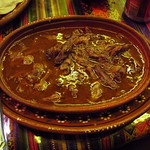

<!DOCTYPE html>
<html lang="en"></html>
<head>
    <meta charset="UTF-8">
    <meta name="viewport" content="width=device-width, initial-scale=1.0">
    <meta http-equiv="X-UA-Compatible" content="ie=edge">
    <title>Birria Recipe</title>
</head>
<body>
    <h1>Birria</h1>
    <a href="../index.html">Back to homepage</a> / <a href="lasagna.html">Lasagna</a> / <a href="birria.html"><b>Birria</b></a> / <a href="pizza.html">Pizza</a> / <a href="tacos.html">Tacos</a>
<p>Birria is a traditional Mexican dish from the state of Jalisco. It is a savory stew made with goat meat or mutton, but it can also be made with beef or lamb. The meat is marinated in a rich adobo sauce made from dried chilies, garlic, cumin, and other spices, then slow-cooked until tender. Birria is often served with corn tortillas, chopped onions, cilantro, and a squeeze of lime. It is a flavorful and hearty dish that is perfect for special occasions or family gatherings.</p>
           
           <p>This is a family favorite on stormy winder day</p>
                <h2>Ingredients</h2>
                <ul>
                    <li>3 pounds beef chuck roast, cut into large chunks</li>
                    <li>4 dried guajillo chilies, stemmed and seeded</li>
                    <li>2 dried ancho chilies, stemmed and seeded</li>
                    <li>1 dried pasilla chili, stemmed and seeded</li>
                    <li>4 cloves garlic, peeled</li>
                    <li>1 medium onion, quartered</li>
                    <li>1 tablespoon apple cider vinegar</li>
                    <li>1 teaspoon ground cumin</li>
                    <li>1 teaspoon dried oregano</li>
                    <li>1/2 teaspoon ground cinnamon</li>
                    <li>4 cups beef broth</li>
                    <li>Salt and pepper to taste</li>
                    <li>Fresh cilantro, chopped (for garnish)</li>
                    <li>Chopped onions (for garnish)</li>
                    <li>Lime wedges (for serving)</li>
                    <li>Corn tortillas (for serving)</li>
                    </ul>
                    <h2>Directions</h2>
                    <ol>
                        <li>In a dry skillet over medium heat, toast the dried chilies for about 2-3 minutes until fragrant. Be careful not to burn them. Remove from heat and let them cool.</li>
                        <li>Once cooled, place the toasted chilies in a bowl and cover them with hot water. Let them soak for about 15 minutes until they soften.</li>
                        <li>Drain the chilies and transfer them to a blender. Add garlic, onion, apple cider vinegar, cumin, oregano, cinnamon, and a pinch of salt. Blend until you get a smooth paste. You may need to add a little water to help it blend.</li>
                        <li>In a large pot or Dutch oven, heat a little oil over medium-high heat. Add the beef chunks and brown them on all sides. This should take about 5-7 minutes.</li>
                        <li>Once the beef is browned, pour the chili paste over the meat and stir to coat all the pieces.</li>
                        <li>Add the beef broth to the pot, ensuring that the meat is mostly covered. Bring to a boil, then reduce the heat to low. Cover and let it simmer for about 2.5 to 3 hours, or until the meat is tender and easily shreds with a fork.</li>
                        <li>Once the meat is tender, remove it from the pot and shred it using two forks. Return the shredded meat to the pot and stir to combine with the broth. Adjust seasoning with salt and pepper to taste.</li>
                        <li>Serve the birria hot, garnished with chopped cilantro and onions. Accompany with lime wedges and warm corn tortillas for dipping.</li>
                    </ol>
           </body>
    </html>